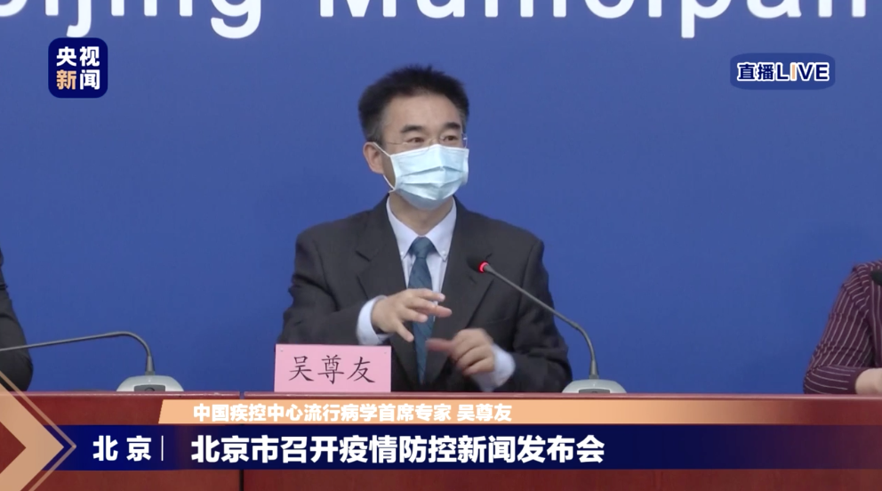
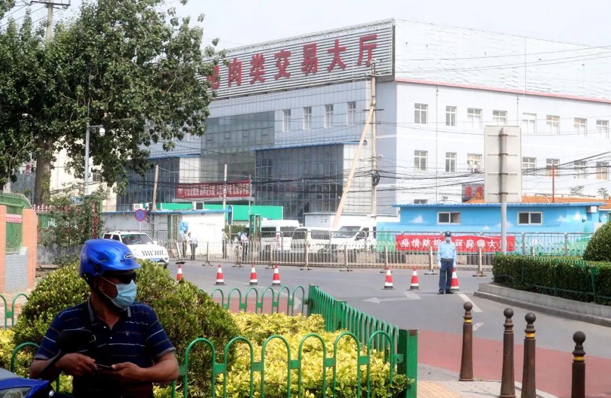

吴尊友：北京的疫情已经控制住了，但有个情况要认清
2020-06-18 17:43今天下午，北京召开疫情防控第125场例行新闻发布会。中国疾控中心流行病学首席专家吴尊友对大家关心的问题作出了回应。

吴尊友：北京的疫情已经控制住了
吴尊友表示，非常明确地告诉大家，北京的疫情已经控制住了。 他解释称，每天新增确诊病例不等于新感染病例，对发病时间分析可知，大部分确诊病例在几天前就出现相关症状，从感染到发病还有一段时间。所以，昨天新增的21个病例都是在6月12日以前感染的。
此次疫情北京市响应及时，第一时间发现了疫情、第一时间锁定了源头、第一时间采取措施，切断了继续传播，把疫情控制在了最小的范围。
疫情控制住不意味着不再有新增病例
吴尊友指出，疫情控制住，不意味着以后不再有新增病例报告。之后新增的病例大多数应该是对既往感染病例的发现，新感染只有零星的。这个新增病例的曲线还会延续一段时间，但病例数会越来越少。
卖水产的感染人数相对最多
为什么疫情发生在新发地批发市场？吴尊友回应称，联合调查组对相关病例进行职业分类发现，卖水产的感染的人数相对比较多，其次是卖牛羊肉的。 从病人的发病时间看，卖水产一类的工作人员发病时间要早。
为什么传染源头可能在卖水产的地方产生？联合调查组又对市场很多地方进行环境采样，采样的结果和病例情况放在一起分析，污染比较严重的地方还是水产和牛羊肉大厅。 初步分析，这可能是因为这些地方温度低、湿度大，适合病毒存活。 至于为什么这里会成为传播中心，还需要进一步分析。
生吃蔬菜、水果是否安全？要看产地和市场
生吃蔬菜、水果是否存在病毒残留的风险？吴尊友表示，首先要看产地是不是安全的。其次，看供应市场是不是安全的。北京蔬菜瓜果主要来自山东、河北，这些地方都是较为安全的。水果生吃没问题，蔬菜能不生吃就不生吃。
责编：刘倩